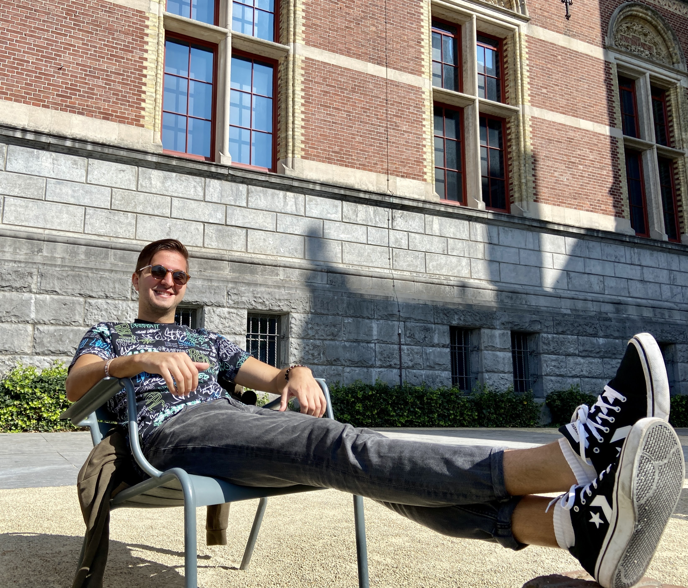
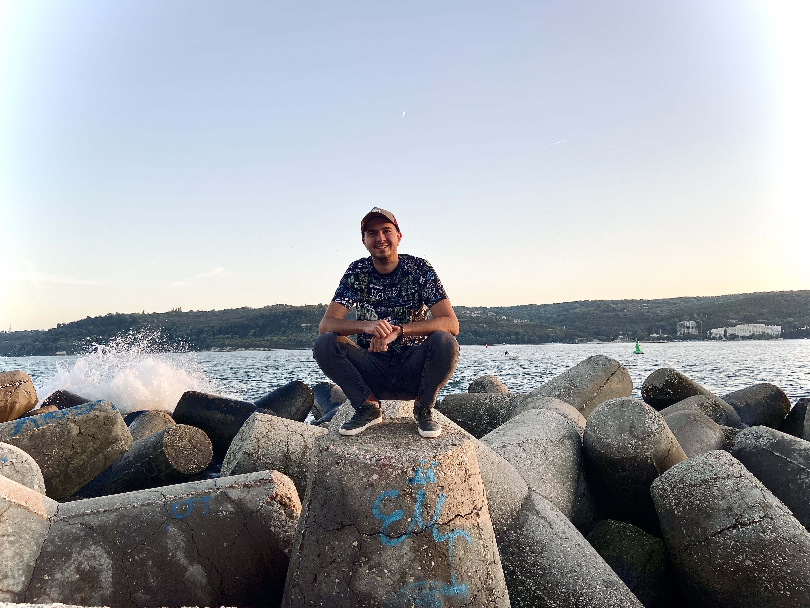
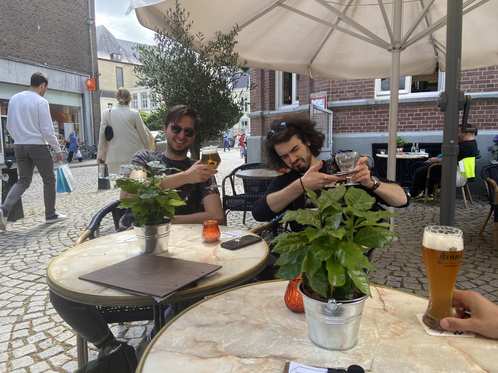

I am a student at Fontys UoAS,from Bulgaria, who is very fond of his study. As you see on my website i like to travel, some of the photos seen below are taken at places presented in this work. This is my personal work and took a lot of time to create and design. I am proud of it!
This photo is taken in the garden of the Rijksmuseum in Amsterdam, a city presentend on my website. If you a traveling to it i recomend checking the weather before traveling to the beautiful Low lands
I like taking risks and creating photos on places that are risky. This photo is taken on the anti-wave barriers at the port of Varna a beatiful city on the Black sea coast. I recommend visiting it, it has all the places to visit in a city: Beaches, zoo, parks, aquarium and planetarium.
This last picture is me and my close friend Viktor, we are getting our beer capacity to a good level before continuing to explore the town of Maastrircht. A city full of history and culture. Another city i would recomend to visit on you way over to the Netherlands!
